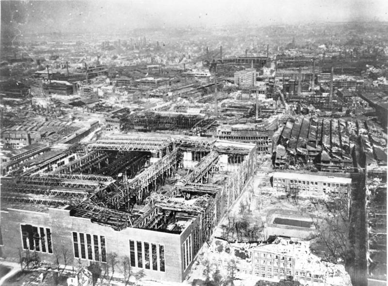
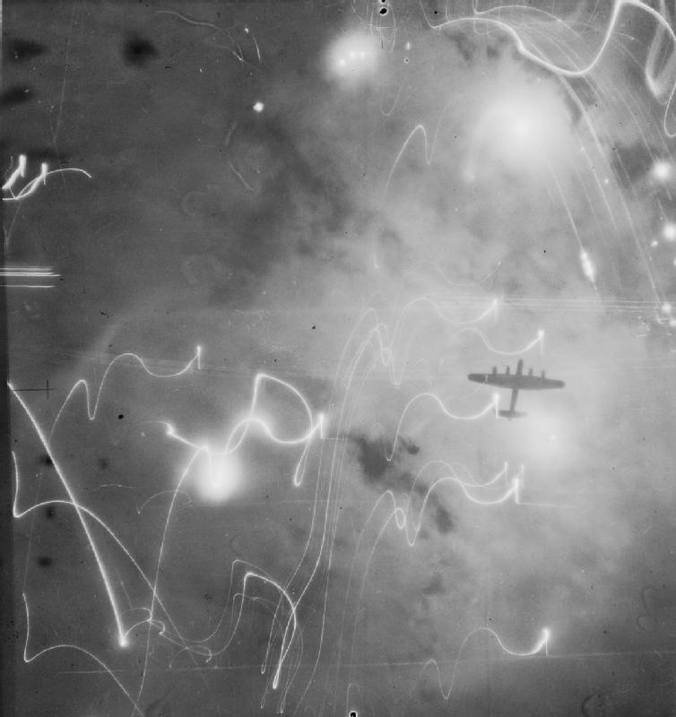
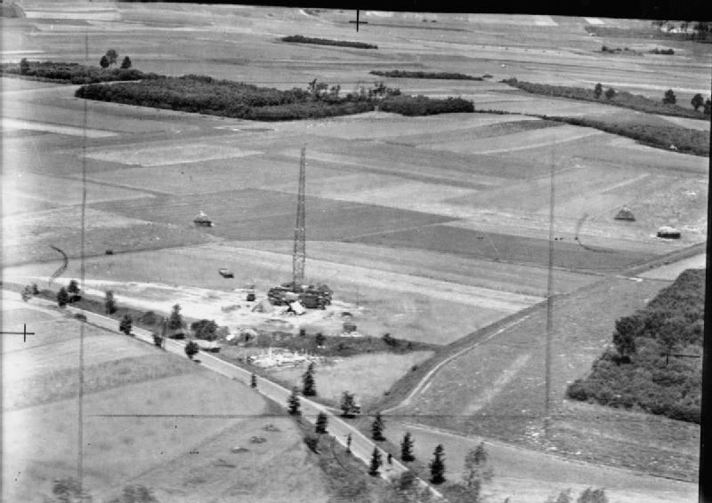
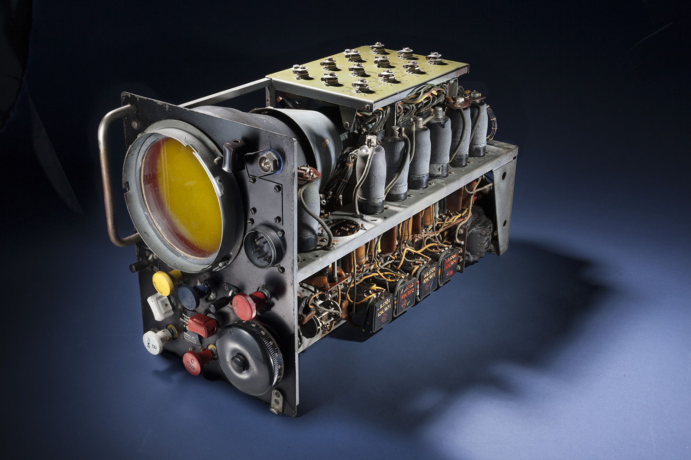

레이더 개발 이야기 (37) - 피해갈 수 없는 jamming과의 싸움
게시: 2023-07-06T06:30:36+09:00
<자신감이 솟아난다!> 1941년 8월, 로열 에어포스는 Gee의 효용성에 확신을 가지고 양산을 결정. 그러나 양산 결정을 한다고 당장 수신기가 쏟아져 나오는 것은 아니며, 생산라인 갖추고 충분한 개수가 쏟아져 나오기 시작하는 것은 다음해인 42년 5월 경에나 가능. 당장 전쟁이 급한 로열 에어포스는 먼저 손으로 한땀한땀 납땜을 해서라도 300개만 먼저 만들어달라고 독려. 그나마 그런 수제 Gee 수신기도 42년 1월에나 만들어짐. 그렇게 만들어진 수제 Gee 수신기를 이용한 첫 공습은 42년 3월 8일 밤에 200대의 폭격기를 동원한 서부 독일의 Essen 공습 작전. 몇몇 폭격기에 Gee 수신기를 장착하여 선두에 서게 한 것. 목표물은 이 도시에 있던 Krupp사의 공장이었으나 정작 이 공장에는 폭탄이 하나도 안 떨어지고 대신 에센 시 남쪽 일대에 폭탄이 잔뜩 떨어짐. 그러나 이것만으로도 로열 에어포스 폭격기 사령부는 잔칫집 분위기. 전체 200대 중 1/3 정도가 에센 시 상공에 도착했는데, 이는 천문항법으로 목표물을 찾던 것에 비하면 엄청난 개선이었던 것.

(결국 1943년 3월의 공습으로 완전히 부서진 에센 시의 크룹 공장. WW2 기간 중 270회의 공습이 이 도시에 이루어졌고 도시 중심부의 90%, 교외의 60%가 파괴됨.) 5일 뒤인 3월 13일 밤, 다시 Gee를 이용한 공습이 에센 바로 남쪽에 위치한 쾰른(Köln)에 이루어짐. 이번에는 Gee를 장착한 선두의 Pathfinder 편대가 제대로 소이탄을 목표물에 투하하여 환히 불을 밝혔고, 덕분에 뒤따르는 폭격기들도 성공적으로 폭탄을 투하. 폭격기 사령부는 예전에 Gee 없이 폭격했던 것에 비해 5배 더 정확한 폭격이었다며 마치 이미 승전을 한 듯 광란의 분위기. 이제 아주 야심이 가득 차게 된 로열 에어포스는 Gee 범위 안인 640km 안에 들어있는 독일 도시 60개를 골라 도시당 약 1700톤의 폭탄을 쏟아붓기로 정책을 바꿈. 이는 보통 4톤의 폭탄을 싣고 독일을 향했던 랭카스터 폭격기 425대가 퍼부어야 하는 분량의 폭탄.

(1943년 1월, 함부르크 밤 하늘의 랭카스터 폭격기. 소위 'Operation Gomorrah'.)
<올 것이 왔다> 성공에 신이 난 로열 에어포스는 Gee의 유효 범위를 늘리고자 여기저기 Gee 기지국을 신설. 당시엔 아직 영국이 독일의 보편적 전파 항법 시스템인 Sonne의 존재를 몰랐으나, 대서양과 북해에서 활동하는 영국 해군 함정들, 특히 잠수함은 Gee를 필요로 했으므로 독일 쪽인 동쪽 해안 뿐만 아니라 스코틀랜드 등 영국의 북쪽 및 서쪽 헤안에도 Gee 기지국을 설치. 노르망디 상륙 이후엔 네덜란드 등 독일 본토 근처에도 Gee 기지국을 설치하여 독일 안쪽 깊숙한 곳까지 Gee의 유효 범위를 확장. 아울러 상륙군과 함께 움직이도록 트럭 등에 실어서 신속히 Gee 유도 전파를 방송할 수 있는 mobile 형태의 기지국도 만들어짐.

(노르망디 상륙 이후 네덜란드에 세워진 Gee 기지국) 무엇보다, Gee는 임무를 마치고 귀환하는 폭격기와 초계기들에게 꼭 필요한 존재. Gee 수신기를 장착하기 전에는 초계기든 폭격기든 출격했던 항공기의 3.5%가 귀환하지 못함. 그게 꼭 독일군에게 공격 당했기 떄문은 아니었던 것이, Gee를 장착하기 시작하자 항공기 미귀환이 1.2%로 확 줄어들었음. Gee의 중요성은 갈 수록 더 중요해져서, Gee 수신기가 고장난 항공기는 출격이 금지될 정도. 그런데 그렇게 중요한 Gee에게 결국 jamming이 들어옴. 1942년 8월 4일, Essen을 폭격하러 신나게 날아가던 폭격기들이 목표 지점 근처에 가자 점점 강력한 방해 전파의 영향을 받아 목표물 20~30km 근처에서는 Gee의 사용이 완전히 불가능해진 것. 기본적으로 Gee는 위성 대신 지상 기지국을 쓰는 GPS 같은 것이기 떄문에 jamming이 쉬웠음. 초기 Gee에 사용하던 20~30 MHz의 신호를 대충 흉내내어 주요 도시 인근에서 마구 쏘아대면 쉽게 jamming이 됨. 영국군은 이 재밍에 대해 새로운 주파수 대역인 40–50, 50–70, 70–90 MHz를 쓰는 새로운 기지국을 잔뜩 만들어 대응. 아울러 Gee Mark II 수신기를 개발. 이건 별 것이 아니라 오실레이터 등의 주요 부품을 모듈화 하여 사용 주파수 대역을 비행 중에도 손쉽게 교체하도록 만든 것. 만약 목표물 근처에 갔더니 20~30 MHz 대역에 방해 전파가 있다면 오실레이터 모듈을 즉각 50~70 MHz로 갈아끼워 사용하는 방식. 그러나 이것들도 jamming에 근본적인 대응은 아니었고, 독일군에게 충분한 시간과 자원만 있다면 언제든 jamming이 될 수 있었음. Jamming 관련에서, Gee는 다음과 같은 장점이 있었음. 1) 목표물이 불분명 : 독일의 Knickebein이나 X-Gerät와는 달리 특정 지역을 전파 beam으로 비추는 것이 아니었으므로 폭격 당하는 독일 입장에서는 영국놈들이 어디를 폭격하러 오는지 알 수가 없었음. 2) 폭격에는 약하지만 귀환에는 강함 : 비록 독일 내에서의 jamming은 쉬웠지만 영국 근처에서는 독일이 jamming하기는 어려웠으므로, 폭격을 마치고 귀환하는 폭격기들에게는 매우 소중한 귀항 길잡이가 되어 항법 오류로 인한 손실을 줄여 주었음. 3) Passive : (뒤에 설명할 H2S 공대지 radar와는 달리) 폭격기에서 내보내는 신호는 전혀 없고 기지국에서 보내오는 신호를 수신만 하기 때문에 독일 야간전투기들이 신호를 역추적하여 공격당하는 일은 없었음. 다만 저 세번째 장점, 즉 passive only라는 점이 오히려 문제를 일으키기도 함. 수신기만 있다면, 독일도 쓸 수 있다는 것. 로열 에어포스가 대서양과 북해에서의 항법에 독일 전파 항법 시스템 존너(Sonne)를 즐겨 사용한 것은 일반 무전기만 있으면 누구든 존너를 쓸 수 있었기 때문. 그에 비해 Gee는 전용 수신기가 있어야 쓸 수 있는 시스템이라서 처음에는 독일은 사용할 수 없었음. 그러나 격추된 로열 에어포스 폭격기들에서 발견된 Gee 수신기는 당연히 독일군의 분석 대상이 되었고, 루프트바페는 거기서 수거한 수신기들을 수리하여 일부를 자신들의 폭격기에 장착, 영국 폭격에 사용. 영국 전역에 촘촘히 설치된 Gee 기지국 덕분에 Gee의 신호는 독일보다는 영국에서 훨씬 더 선명했고, 덕분에 독일 폭격기들은 아무 jamming 없이 Gee에 의한 편리한 항법을 이용.

(Type 62A GEE Mark II Indicator Unit. 뭔지 모를 전깃줄과 진공관 등이 잔뜩 달려있음. 요즘 반도체는 곧 안보 문제라고 세계가 떠들고 있는데, WW2 당시에는 진공관이 곧 안보 문제였음.)
그런 역이용에 대해 로열 에어포스는 무슨 대비를 세웠을까? 아무 대비책 쓰지 않았음. WW2 후반부로 갈 수록 독일이 수세에 몰리면서, 독일 폭격기에게 일부 역이용된다고 하더라도 Gee를 계속 살려두는 것이 영국 측에게 훨씬 이익이었기 때문.
하지만 Gee에는 jamming이 쉽다는 것 외에도 치명적인 단점이 있었음. 기지국 범위 내에서만 쓸 수 있으므로 독일 깊숙한 곳을 폭격하는 것에는 별로 쓸모가 없었다는 점. 그래서 로열 에어포스는 Gee와 함께 다른 것도 만들고 있었음. 그것은 바로...